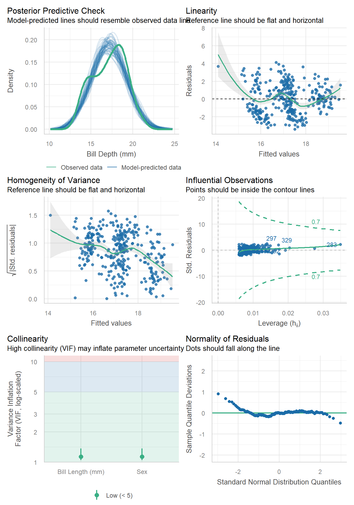

pen <- palmerpenguins::penguins
library(gtsummary)
library(tidyverse)
library(performance) # for check_model. You will also need to install the `see` package
# webshot2 -- You will have to install this package to use gtsave but don't need to load itHow do I….
This page is dedicated to showing example code for selected tasks.
Create Nice variable names
Select the variables of interest and rename them nicely using select. Note any name with a space in it has to be surrounded by a back tick (to the left of the 1 key)
analysis.data <-
pen %>%
select(`Bill Depth (mm)` = bill_depth_mm,
`Bill Length (mm)` = bill_length_mm,
Sex = sex) %>%
na.omit()Summarize a continuous variable across a categorical variable with many levels?
Problem:
Sometimes the categorical variable has so many levels, or the level names are so long that the table wraps off the edge of the PDF and is unreadable.
pen |>
tbl_summary(
include = bill_length_mm,
by = species
)| Characteristic | Adelie N = 1521 |
Chinstrap N = 681 |
Gentoo N = 1241 |
|---|---|---|---|
| bill_length_mm | 38.8 (36.7, 40.8) | 49.6 (46.3, 51.2) | 47.3 (45.3, 49.6) |
| Unknown | 1 | 0 | 1 |
| 1 Median (Q1, Q3) | |||
Solution
There is no easy way to rotate or “transpose” a gtsummary object. One approach is to manually use a “split-apply-combine” method.
- we “map” a function
\()across all levels ofpen$speciesindexing bys - For
speciess, we create atbl_summary - where we modify the header to have a common name of the numeric variable in question
- And change the label of the row to the species level
s - Then we
stackthe tables together, and replace theheaderwith the name of the Categorical variable
purrr::map(levels(pen$species), \(s)
pen |>
filter(species == s) |>
tbl_summary(include = bill_length_mm, missing = "no") |>
modify_header(all_stat_cols() ~ "**Bill length (mm)**") |>
modify_table_body(~ mutate(.x, label = s))
) |>
tbl_stack(group_header = NULL) |>
modify_header(label ~ "**Species**")| Species | Bill length (mm)1 |
|---|---|
| Adelie | 38.80 (36.70, 40.80) |
| Chinstrap | 49.6 (46.3, 51.2) |
| Gentoo | 47.30 (45.30, 49.60) |
| 1 Median (Q1, Q3) | |
Another approach is to use dplyr to group_by and summarize, then pass the data frame into kable from the knitr package to make a nicer table.
- Create your summary statistics using
group_byandsummarize. - Create a new variable as the column header, using back ticks to allow for a “non standard” variable name.
- Create this new variable by
paste’ing the value of the mean and sd together with parenthesis, after rounding to 2 digits. selectthe variables you want to display- Pass it to
kable()
pen |>
group_by(species) |>
summarize(mean=mean(bill_length_mm, na.rm=TRUE),
sd = sd(bill_length_mm, na.rm=TRUE)) |>
mutate(`Bill Length(mm)` = paste0(round(mean,2), " (", round(sd,2), ")")) |>
select(Species= species, `Bill Length(mm)`) |>
knitr::kable()| Species | Bill Length(mm) |
|---|---|
| Adelie | 38.79 (2.66) |
| Chinstrap | 48.83 (3.34) |
| Gentoo | 47.5 (3.08) |
See the kableExtra vignette for additional references on how to prettify this table.
Plots
Export to a file
Make it look good first.
ggplot(analysis.data, aes(x=`Bill Length (mm)`,
y = `Bill Depth (mm)`,
color = Sex)) +
geom_point() +
theme_bw(base_size=18)Then save. Import this into your poster file and adjust the width and height as needed.
ggplot(analysis.data, aes(x=`Bill Length (mm)`,
y = `Bill Depth (mm)`,
color = Sex)) +
geom_point() +
theme_bw(base_size=18)
ggsave(filename = "myplot.png", plot = get_last_plot(),
width = 6, height = 6, units = "in")Remove a legend
ggplot(pen, aes(x=island, fill = island)) + geom_bar() +
theme(legend.position="none")Regression model results
Make it look good first.
model <- lm(`Bill Depth (mm)` ~ `Bill Length (mm)` + Sex, data=analysis.data)
model %>%
tbl_regression() %>%
add_glance_table(include = c(adj.r.squared, nobs)) | Characteristic | Beta | 95% CI | p-value |
|---|---|---|---|
| Bill Length (mm) | -0.15 | -0.18, -0.11 | <0.001 |
| Sex | |||
| female | — | — | |
| male | 2.0 | 1.6, 2.4 | <0.001 |
| Adjusted R² | 0.279 | ||
| No. Obs. | 333 | ||
| Abbreviation: CI = Confidence Interval | |||
Then add the code to export it as an image.
model %>%
tbl_regression() %>%
add_glance_table(include = c(adj.r.squared, nobs)) %>%
as_gt() %>%
gt::gtsave(filename = "model_results.png", expand = 10)Resizing your output
Necessary to not make certain plots super squished.
Without resizing.
check_model(model) # from the performance packageApply a code chunk option (#|) to resize the height
```{r}
#| fig-height: 10
check_model(model)
```